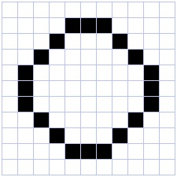

Warm up
- What does the following code do?
for i in (1, 2, 3, 4, 5):
print("All work and no play makes Jack a dull boy")
Modify it to print the line 100 times (You want to do a loop, check python’s documentation)
One possible solution, using a “while loop”:
n = 1
while n <= 100:
print("All work and no play makes Jack a dull boy")
n = n + 1
Another, using a “for loop” and the function range:
for _ in range(100):
print("All work and no play makes Jack a dull boy")
Modify the program to randomly select a name in the set {John, Jack, Paul, Tim} at each line.
(hint: import the module “random” and use the function “random.choice”)
import random
NAMES = ('John', 'Jack', 'Paul', 'Tim')
for _ in range(100):
name = random.choice(NAMES)
print("All work and no play makes " + name + " a dull boy")
Representation of integers
There are 10 kinds of people: those who count in binary and the others.
Computers represent everything as series of 0 and 1, also known as bits (for “binary digits”).
Just like a number can be written in base 10, it can be written in base 2:
E.g.
12 : 10 + 2 = 8 + 4 = 2**3 + 2**1 : 1010
33 : 30 + 3 = 32 + 1 = 2**5 + 1 : 100001
1 : 1
2 : 10
3 : 11
4 : 100
5 : 101
6 : 110
7 : 111
...
To learn more about how integer numbers are reprsented in binary format, you can check out http://csunplugged.org/binary-numbers
- Convert (manually) into decimal the following binary numbers:
Answer: 5, 8, 11, 255
- Write a function that, given the binary representation of a number as a string of ‘0’ and ‘1’, returns its value as a integer.
def todec(s):
""" convert a string of 0 and 1 representing a binary number into an integer """
n = 0
for i in s:
n = n * 2 + int(i)
return n
for i in ['101', '1000', '1011', '11111111']:
print(todec(i))
- Now we will go in the other direction: Our aim is to write a program that, given a number (in decimal), computes its binary representation.
If you have an idea how to program it, please proceed. If not, we propose that you follow the following steps:
- Study the program below. Execute it with various values of the variable num. Do you understand the last line? Do you see a limitation of this program?
num = 143
d3 = int(num/1000) % 10 # thousands
d2 = int(num/100) % 10 # hundreds
d1 = int(num/10) % 10 # dec
d0 = num % 10
print(str(d3) + str(d2) + str(d1) + str(d0))
- Adapt the above program to print the binary representation of num
num = 17
b0 = num % 2
b1 = int(num/2) % 2
b2 = int(num/4) % 2
b3 = int(num/8) % 2
b4 = int(num/16) % 2
b5 = int(num/32) % 2
b6 = int(num/64) % 2
b7 = int(num/128) % 2
b8 = int(num/256) % 2
print(str(b8) + str(b7) + str(b6) + str(b5) + str(b4) + str(b3) + str(b2) + str(b1) + str(b0))
- Modify the above program to print the binary representations of every number between 0 and 255.
def tobin(num):
b8 = int(num/256) % 2
b7 = int(num/128) % 2
b6 = int(num/64) % 2
b5 = int(num/32) % 2
b4 = int(num/16) % 2
b3 = int(num/8) % 2
b2 = int(num/4) % 2
b1 = int(num/2) % 2
b0 = num % 2
return (str(b8) + str(b7) + str(b6) + str(b5) + str(b4) + str(b3) + str(b2) + str(b1) + str(b0))
for n in range(256):
print(n, tobin(n))
- (Advanced) Write an improved version that uses a loop and does not have a limitation in size.
def binary(n):
if n==0:
return "0"
s = ""
while n > 0:
b = str(n % 2)
s = b + s
n = n / 2
return s
- Study the following code. Do you understand why it works?
def binary(num):
if num == 0:
return "0"
if num == 1:
return "1"
return(binary(int(num /2)) + binary(num % 2))
print(binary(1234))
Answer: It is a recursive function which calls itself. See http://en.wikipedia.org/wiki/Recursion_%28computer_science%29
Remark: measures of memory size
- 1 byte = 8 bits
- 1 Kilobyte (KB) = 1024 bytes
- 1 Megabyte (MB) = 1024 kbytes = 1048576 bytes
- 1 Gigabytes (GB) = 1024 Mbytes
- Terabyte, Petabyte, Exabyte…
Exercice (advanced): Write a function that return the hexadecimal representation (base 16) of a number.
To go further:
Representation of text
A text file is nothing but a sequences of characters (a word document is not a text file).
For a long time, characters were encoded using ASCII code.
- lookup the ASCII representation of your first name in the table and use the chr function of Python to print it.
For example, if you name is ‘ZOE’, you would type:
print(chr(90)+chr(79)+chr(69))
Remark: ASCII codes use one byte per characters. This is fine for English, but cannot cover all the caracters of all alphabets. It cannot even encode french accented letters.
Unicode was invented that associate a unique 2 bytes number to each character of any human script. It is possible to write text files using these number, but more economic to encode the most common letters with one byte, and keep the compatibility with ASCII (UTF-8).
How to read a text file in Python
Download Alice in Wonderland
f = file('alice.txt')
o = f.read()
print(o)
lines = o.split("\n")
print(lines)
- Write a program that counts the number of lines, and number of words in alice.txt (we suppose that words are separated by spaces).
f = file('alice.txt')
o = f.read()
print(o)
lines = o.split("n")
nlines = len(lines)
nw = 0
for l in lines:
nw += len(l.split(" "))
print(nlines)
print(nw)
- Write a program that detects if a text file contains the word ‘NSA’
def spot_nsa(filename):
f = file(filename)
o = f.read()
lines = o.split("n")
found = False
for l in lines:
if "NSA" in l.split(" "):
found = True
break
return found
Representation of images
Images can be stored either:
- as bitmaps, that is a two dimensional arrays of dots (formats: bmp, png, gif, jpeg…)
- as vectorized formats, the image contain instruction for drawing objects (eps, pdf, svg, …).
Here we are just going to manipulate bitmaps.
Black and white bitmaps
Each dot (pixel) is either ‘0’ (black) or ‘1’ (white).

- What is the size in kilobytes of a 1024x768 pixels images ?
Answer: 1024*768/8/1024=96 KB
- Execute the follwoing code (it requires the modules numpy and matplotlib).
import numpy as np
import matplotlib.pyplot as plt
a = np.array([[0, 0, 0, 0, 0, 0, 0],
[0, 0, 1, 1, 1, 0, 0],
[0, 0, 1, 1, 1, 0, 0],
[0, 0, 1, 1, 1, 0, 0],
[0, 0, 1, 1, 1, 0, 0],
[0, 0, 1, 1, 1, 0, 0],
[0, 0, 0, 0, 0, 0, 0]])
plt.imshow(a, cmap=plt.cm.gray, interpolation='nearest')
plt.show()
Numpy’s arrays are a new type of object. There are similar to lists, but optimised for mathematical computations. Notably, they can be multidimensional (i.e. you can use a[i,j] notation). You can learn more about arrays in the documents http://www.pallier.org/cours/AIP2013/python4science.pdf and http://wiki.scipy.org/Tentative_NumPy_Tutorial.
- Exercice:
- Create a cross.
- create a 200x200 bitmap:
- add a diagonal
- make two crosses imitating the British Flag
a = np.zeros((200,200))
for i in range(200):
a[i, i] = 1
plt.imshow(a, cmap=plt.cm.gray, interpolation='nearest')
plt.show()
a[0:200:2,] = 1
plt.imshow(a, cmap=plt.cm.gray, interpolation='nearest')
plt.show()
Grey level pictures
Each dot is now associated to an integer value, e.g. ranging from 0 to 255 for 8-bits codes, coding for a grey level (smaller=darker). Each dot needs one byte.
How large is the file for a 1024x768 image pixels with 256 grey levels?
The following code displays an image:
import scipy.misc
l = scipy.misc.lena()
plt.imshow(l, cmap=plt.cm.gray)
plt.show()
This code runs a low pass (averaging) filter on it:
import scipy.ndimage
bl = scipy.ndimage.gaussian_filter(l, 3)
plt.imshow(bl, cmap=plt.cm.gray)
plt.show()
Edge detector. It is easy to implement an edge detector with a neural network. See https://courses.cit.cornell.edu/bionb2220/UnderstandingLateralInhibition.html.
Using the ndimage.convolve function, apply the following filters to the image and diplay the results.
kernel1 = np.array([[-1, -1, -1],
[-1, 8, -1],
[-1, -1, -1]])
kernel2 = np.array([[-1, -1, -1, -1, -1],
[-1, 1, 2, 1, -1],
[-1, 2, 4, 2, -1],
[-1, 1, 2, 1, -1],
[-1, -1, -1, -1, -1]])
More manipulations are available at http://scipy-lectures.github.io/advanced/image_processing/.
Colored bitmaps
Each dot is now associated to three bytes, representing the Red, Gree and Blue intensities (see http://www.colorpicker.com/).
How large is the file for a 1024x768 RGB image?
Exercice: What are the RGB triplets for BLACK, WHITE, RED, YELLOW?